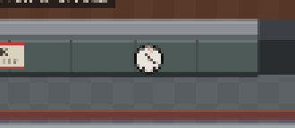
A clock with thirteen hours
The book opens on "a bright cold day in April, and the clocks were striking thirteen." So the clock on the corridor wall has thirteen points on its face instead of twelve.
Portfolio project · AI experiment
You are Big Brother. Nothing escapes your eye.
A company of AI staff, each a language model running on my own computer, organised like the bureaucracy in Orwell's Nineteen Eighty-Four. You give the orders and watch the building carry them out. This is why I made it, and every little nod to the book hidden inside.
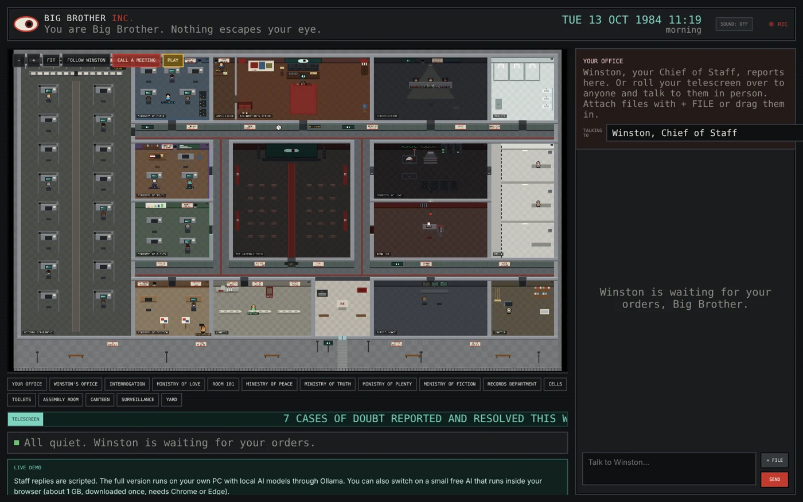
Look at the date in the corner. It's today, but the year is always 1984.
“First AI comes up with our ideas. Then it does our thinking.”
I kept noticing a trend: people relying on AI to come up with their ideas for them. Follow that far enough and AI starts doing our thinking, and whoever owns the AI gets to decide how we think. That's a very Orwellian place to end up.
So I made the joke the other way round. Big Brother Inc. is an AI system built as Oceania itself: a bureaucracy of language models where every task is relayed, inspected and judged, and you sit at the top as Big Brother. Building a cheerful pixel-art game about AI control, out of AI, felt like the right kind of contradiction.
It's a passion project, made for fun. It runs entirely on free models on my own computer, and it's honest about being an experiment rather than a dependable product.
Most AI assistants are one voice in a chat box. This is an organisation of them. One model routes the work, others specialise, and a separate group does nothing but criticise. Nothing reaches you until it has passed the Thought Police.
Live preview
This is the live demo, running in the frame. The online version uses scripted replies, with the option to load a small AI that runs in your browser.
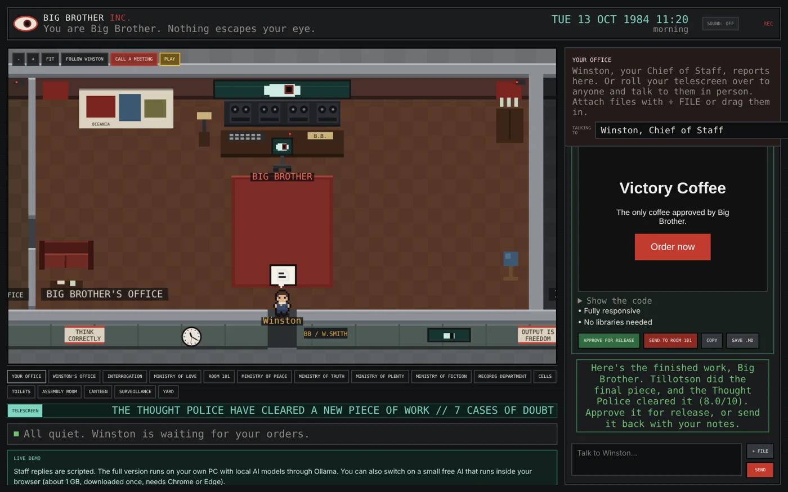
The 1984 setting isn't decoration. Almost every idea from the book maps onto a real part of the system.
| In the book | In Big Brother Inc. |
|---|---|
| Big Brother, the face no one meets | You. You have no face, just a mainframe with one watching eye and a telescreen on wheels that rolls out to speak to people. |
| Winston Smith | Your Chief of Staff, the only one who reports to you. He routes every request. |
| The Ministries | Peace (code), Truth (study and research), Plenty (business) and Fiction (writing and pictures), each with its own specialist. |
| The Thought Police | Three reviewers who only ever judge, each on a different model family so they catch different mistakes. |
| Room 101 | Where failed work, and its author, go to be rewritten using the judges' notes. |
| The memory hole | Rejected drafts drop down a slot in the wall, though they're kept in the Records archive. |
| The Records Department | Approved work is filed here: a canister shoots along the pneumatic tube and the counter ticks up. |
| Telescreens | Screens in every room show each agent writing live, with CCTV and a scrolling announcement ticker. |
| Unpersons | Remove a staff member and they never existed, though the building keeps a ledger of who was erased. |
| The Two Minutes Hate | Call a meeting and the whole staff files into the Assembly Room for a rally. |
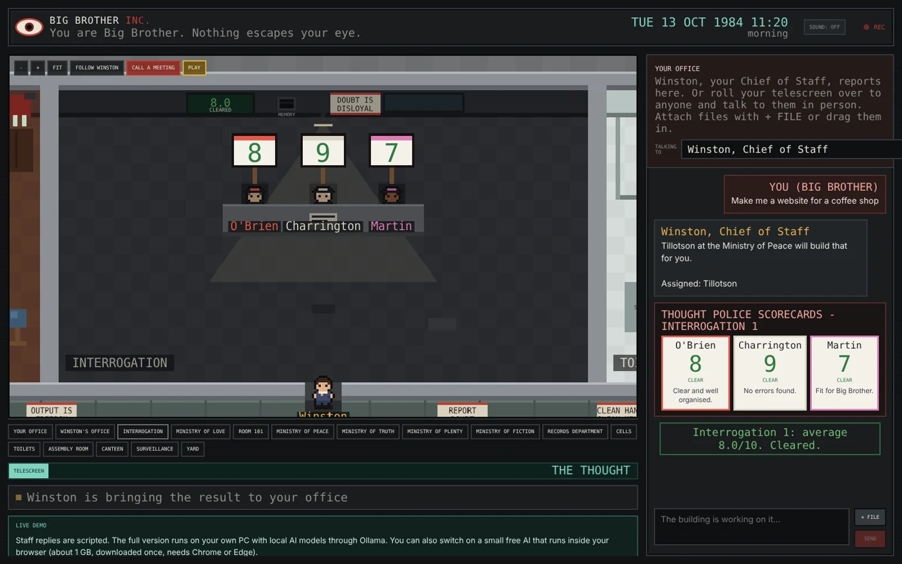
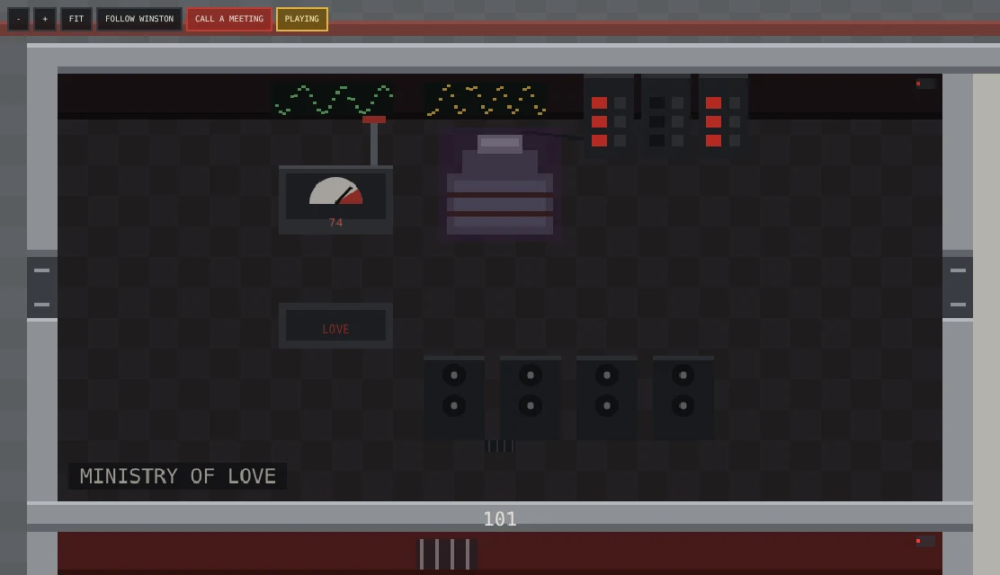
Every member of staff is a character from the book, with their own personality, job and model. The names are chosen to fit: in Orwell's novel Tillotson works in the Records Department, Parsons is the eager neighbour, Ampleforth is the poet with the hairy ears, and Mr Charrington is the kindly shopkeeper who turns out to be Thought Police.
Quiet, diligent, a little nervous. Never does the work; knows who should.
Routes everythingPractical lead engineer who prefers working code to talk.
Runs on a coding modelA precise professor who breaks university briefs into steps and criteria.
Keeps a Newspeak dictionaryThe hard-working Scholar who follows the Professor's plan. Yes, that's me: I put myself in the education department because I'm at university.
Does the actual workEnthusiastic, eager-to-please strategist who always asks who'd pay.
Business ideasA dreamy poet with big ears. Writes, rhymes and draws pictures as SVG.
Writing and imagesCalm, courteous and terrifyingly thorough. Never lets a flaw through.
Hunts for errorsA mild-mannered old agent who misses nothing, line by line.
Checks it does the jobSilent and exacting. Cannot abide waffle, jargon or muddle.
Checks it's clearThe building is full of little nods to the book that most people will walk straight past.

The book opens on "a bright cold day in April, and the clocks were striking thirteen." So the clock on the corridor wall has thirteen points on its face instead of twelve.
The date in the corner is today's date and the real time, but the year never changes. The day and night outside the building follow the real clock too.
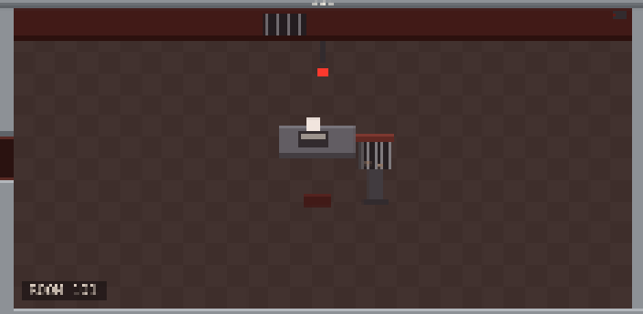
Room 101 has the chair, the heavy door and a cage on the table. When someone is sat in the chair, the rats get restless.
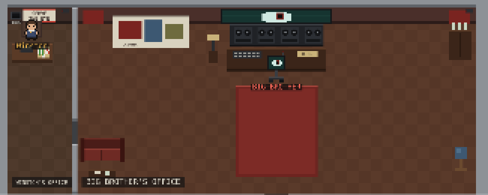
Big Brother has no face: your office holds a mainframe with a single watching eye, and you travel as a telescreen on wheels. The drinks cabinet is stocked with Victory Gin.
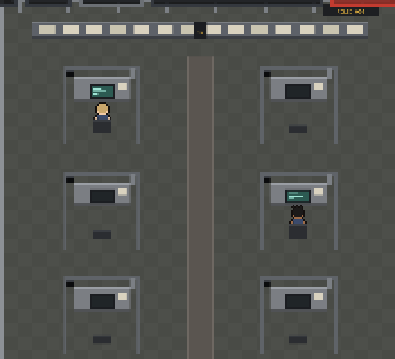
Every cubicle in the Records Department has its own memory hole, and approved work shoots along the pneumatic tube in a canister when Winston files it.
In the book, Syme boasts that the Newspeak dictionary gets thinner with every edition, because they're destroying words. William, the Professor, has a Newspeak dictionary on his desk, and it grows thinner while he works.
Instead of copying the book's "War is Peace", every room has its own posters written for this company, in the Party's voice: "Output is freedom" in the ministries, "File it. Forget it." in Records, "Doubt is disloyal" by Interrogation, and a ticker that announces how many cases of doubt were reported and resolved this week.
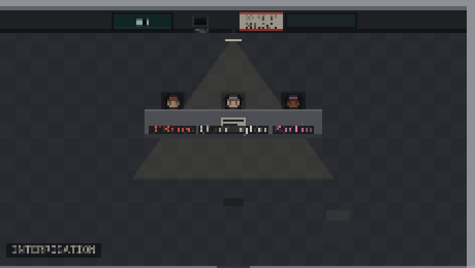
Staff keep office hours, take canteen breaks and get surprise spot checks from the Thought Police. Background clerks fill the ministries, and the telescreens hum.
In the minigame you become clerk 6079, which is Winston Smith's number in the book, barked at him by the instructor during the morning Physical Jerks.
One of Winston Smith's few happy memories in the book is playing Snakes and Ladders with his mother on a rainy afternoon. So there's a Snakes and Ladders board in Winston's room.
I added myself to the staff as Harry, the Scholar, in the Ministry of Truth, which is the education department. A little detail, because I'm at university.
Press PLAY and you swap sides. Now you're the clerk, and Winston brings you a brief: a breakfast cereal for the Junior Spies, a seaside camp on Airstrip One, a board game for Hate Week, a subscription box of Victory Gin. Along with it comes a list of hidden words you have to sneak into your pitch without the Thought Police noticing.
Most are silly, but the dangerous ones are pulled from the book: Goldstein, Julia, the Brotherhood, and quieter ones only a reader would spot, like the paperweight, oranges (as in "Oranges and lemons") and the Chestnut Tree. Cram them in, shout them or wander off brief and you're dragged to Room 101. Three warnings and you become an unperson. When a real model is judging, a member of the Brotherhood even awards bonus points for quietly mocking the Party.
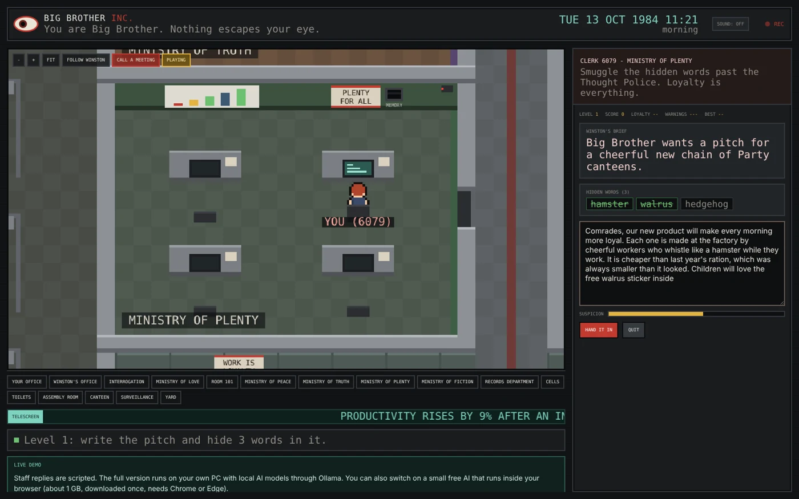
I wanted it to cost nothing. Every agent is a free, open-source model running locally through Ollama on my own PC, developed on a 12 GB graphics card. The judges deliberately run on different model families, so they make different mistakes and catch different errors.
The backend is one Python file with no dependencies. It runs the agents, streams their writing live to the browser and handles files and records. The whole building, every sprite, the pathfinding, the day and night and the sound effects are drawn and generated in one HTML file. The version online runs without a server, using scripted replies or a small model inside your browser.
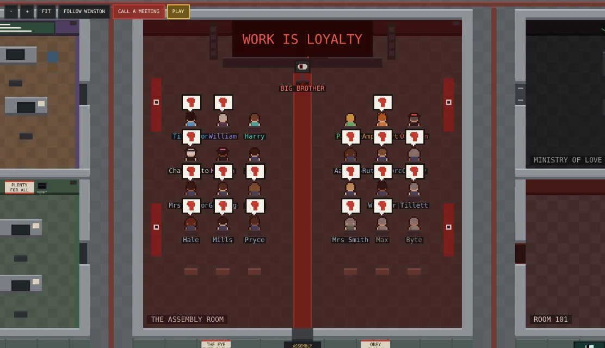